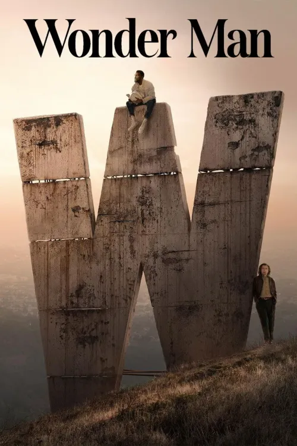

Wonder Man
El aspirante a actor, Simon Williams, lucha por hacer despegar
su carrera. Durante un encuentro por casualidad con el actor
veterano, Trevor Slattery, Simon se entera de que el legendario
director Von Kovak está por hacer la remake de la película de
súper héroes “Wonder Man”. Estos actores en los extremos
opuestos de sus carreras persiguen roles en esta película que
cambiarían sus vidas, mientras la audiencia puede espiar detrás
del telón de la industria del entretenimiento.
Genero
AventuraAño
2023Duración
1h 48minDirector
Productores/as
Calificación general: 7.1/10
Clasificación por edad: +18
Plataformas
Tráiler
REPARTO

YAHYA ABDUL-MATEEN II

BEN KINGSLY

JOSH GAD

ZLATKO BURIĆ

X MAYO
Calificación: 9.0 / 10
George_Allison dice:
BUENISIMA
“F1 es un espectáculo visual imponente que redefine el cine de automovilismo gracias a una dirección técnica impecable y secuencias de acción filmadas con un realismo visceral. Brad Pitt aporta la veteranía y el peso emocional necesarios para que la historia trascienda más allá de la simple velocidad. Aunque su narrativa sigue senderos familiares, la inmersión sonora y visual compensa cualquier falta de sorpresa en el guion. Es una experiencia diseñada para ser disfrutada en la pantalla más grande posible, logrando transmitir la verdadera adrenalina del circuito. En resumen, la película triunfa como un blockbuster emocionante que captura con maestría el alma de la competición.”
Calificación: 3.0 / 10
Cinefilo88 dice:
REPETITIVA
"Aunque la acción es impecable, la banda sonora de Hans Zimmer se siente algo repetitiva y no logra alcanzar la originalidad de sus trabajos anteriores. Los efectos de sonido de los motores son tan potentes que, por momentos, entierran los diálogos clave entre los protagonistas."
Calificación: 8.0 / 10
echGuru_VLC dice:
Buena
"Lo que realmente destaca no es la historia, sino el despliegue de cámaras IMAX montadas directamente en los monoplazas, algo nunca antes visto. Es un hito tecnológico que hace que cualquier otra película de carreras anterior parezca un videojuego de baja resolución."
Calificación: 7.0 / 10
Nostalgic Editor dice:
Bien
"El ritmo de la película sufre en el segundo acto, con una edición que se siente algo lenta y estira la duración innecesariamente hasta pasadas las dos horas. Aun así, el clímax final en la última vuelta está tan bien montado que te mantiene al borde del asiento, olvidando cualquier bache narrativo previo."
RELACIONADOS

MARVEL ZOMBIE
Calificación: 7.0/10
DURACION: 1 TEMPORADA

IRON HEART
Calificación: 4.5/10
DURACION: 1 TEMPORADA

HAWKEJE
Calificación: 4.5/10
DURACION: 1 TEMPORADA